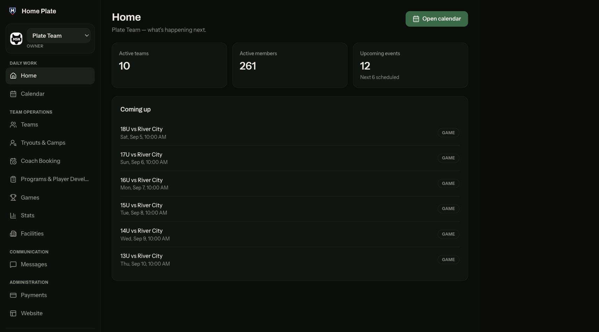
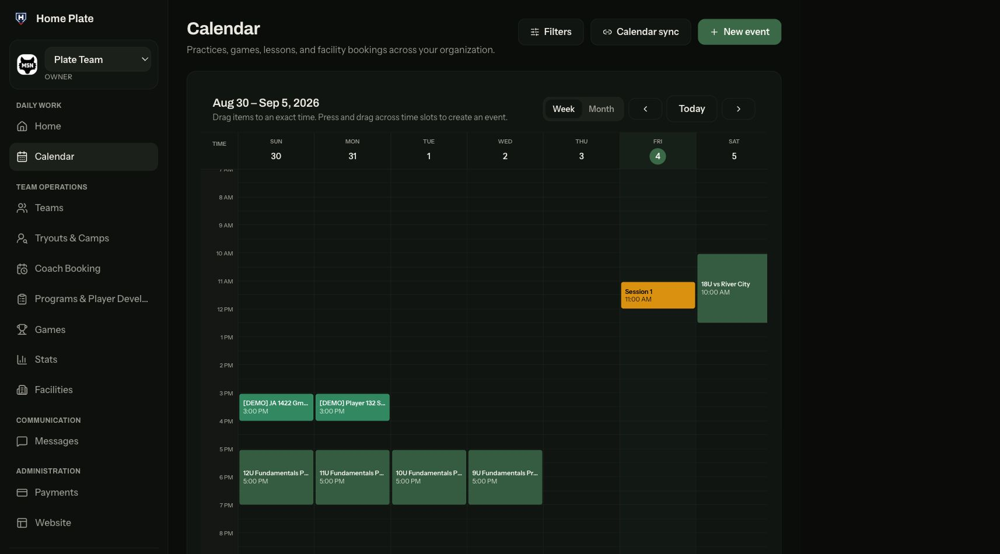
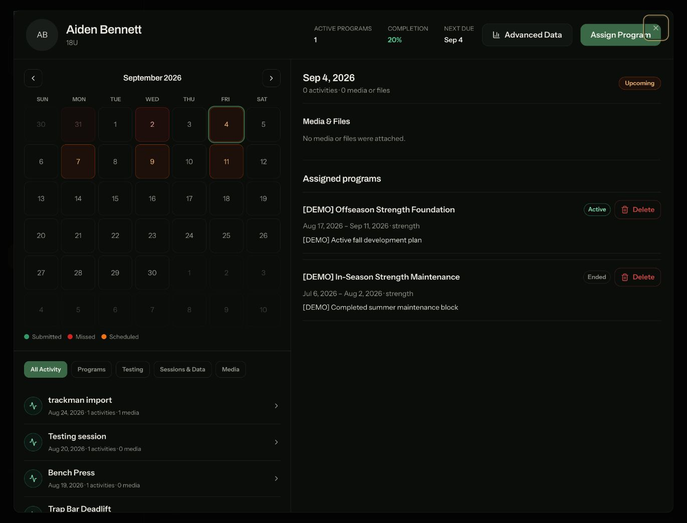
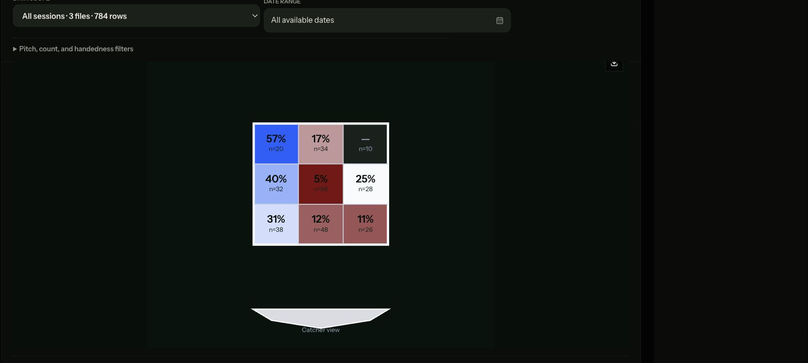

Run the facility
Manage schedules, space, bookings, payments, communication, and business reporting.
Player development / business operations
One baseball operations platform for development work, facilities, bookings, payments, communication, and analytics.
The product
Home Plate is built for baseball organizations that need to run the business and coach players without piecing together separate tools.
Facilities can manage schedules, space, bookings, payments, communication, hosted websites, and business analytics.
Coaches can assign programs remotely, track completed work, review testing history, and keep feedback attached to each player.
TrackMan, Rapsodo, and HitTrax data is analyzed through an R service and delivered inside the mobile app, so coaches and players can review it away from a desktop.
Business operations
The organization dashboard puts player activity next to bookings, utilization, payments, and revenue.


Remote player development
Programs, daily work, testing, trends, and coach feedback stay available whether the player is at the facility or training elsewhere.


Manage schedules, space, bookings, payments, communication, and business reporting.
Assign programs, review completed work, and keep feedback with the player record.
Put R-based TrackMan, Rapsodo, and HitTrax analysis into a mobile workflow.